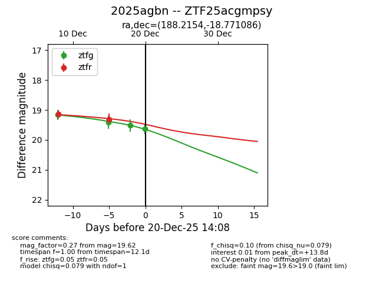
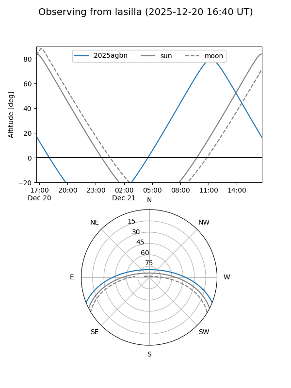
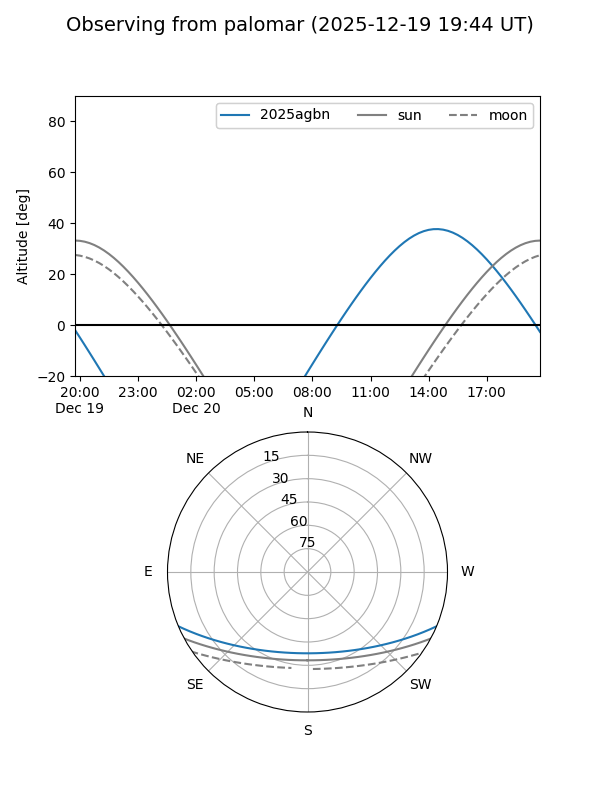
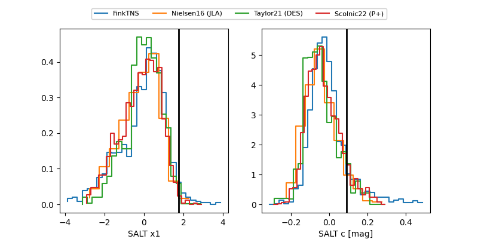

2025agbn
Target 2025agbn at 2025-12-18 14:32
Aliases and brokers:
FINK: fink-portal.org/ZTF25acgmpsy
Lasair: lasair-ztf.lsst.ac.uk/objects/ZTF25acgmpsy
ALeRCE: alerce.online/object/ZTF25acgmpsy
TNS: wis-tns.org/object/2025agbn
YSE: ziggy.ucolick.org/yse/transient_detail/2025agbn
alt names
ZTF25acgmpsy (ztf,fink_ztf)
2025agbn (tns,yse)
Coordinates:
equatorial (ra, dec) = 188.2154,-18.77109
equatorial (HMS+DMS) = 12:32:51.69,-18:46:15.91
galactic (l, b) = (296.8267,+43.88034)
Photometry
last ztfg=19.52, ztfr=19.32
3 ztfg, 2 ztfr detections
Lightcurve

Visibility


Additional plots
